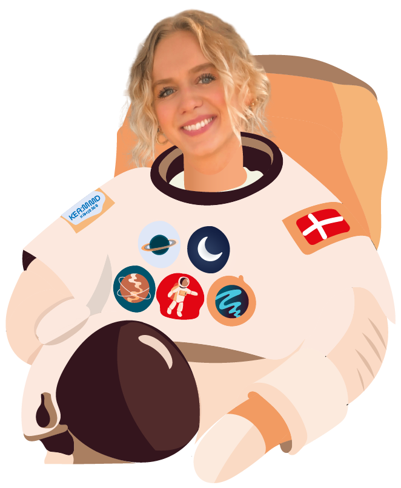

CV:
Kamilla Møller Jæger
18-02-1997
kami8360@stud.kea.dk
+45 27521470
Multimediedesign, 1. semester
OM MIG:
Multimediedesign-studerende med base i København.
I løbet af mit første halve år på uddannelsen har
jeg tilegnet mig
færdigheder og kompetencer indenfor design og programmering af digitale brugergrænseflader.

Mine styrker dækker især over grafisk design og illustration bl.a. i adobe-programmet
illustrator.
For den kommende del af uddannelsen vil jeg arbejde imod at blive endnu stærkere til
programmering, som jeg finder
enormt spændende og udfordrende.
I fremtiden er min drøm at kunne arbejde som selvstændig, udfolde min kreativitet og selv at
tilrettelægge min hverdag.